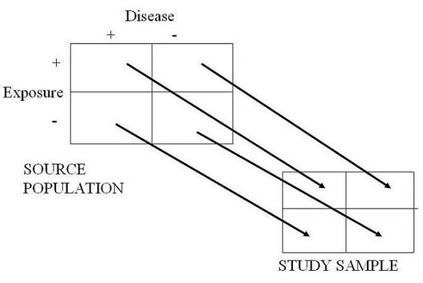
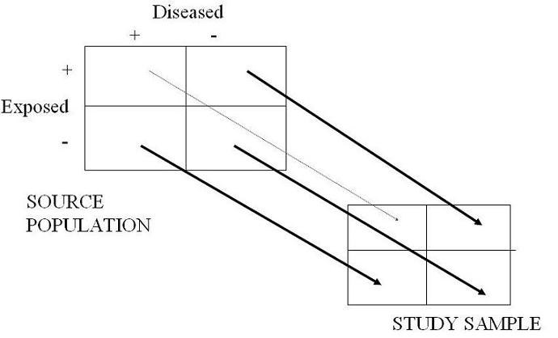

Selection Bias - Analytic Study
Lead Author(s): Jeff Martin, MD
Unbiased Sampling in Analytic Studies
In an analytic study or case control study, we are looking for the association between exposures (or interventions in the case of experimental studies) and diseases.
- In the 2 x 2 table schematic below we depict the presence or absence of exposure along the rows and the presence of absence of disease over the columns.
- This is what the schematic looks like in the presence of unbiased sampling and no selection bias.
- The arrows all have the same weight and therefore there is an equal probability of being selected into the study no matter which of the 4 cells you are in in the source population.
- If there is an equal probability of being selected no matter which of the 4 cells you live in, no selection bias can result.
- Formally, the weight of the arrows is equal to the selection probability for each of the cells, sometimes called sampling fraction.
- This is an example of an unbiased sampling of controls in a pancreatic cancer sutdy.
Schematic of Unbiased Sampling

Biased Sampling in Analytic Studies
Here is the schematic of what selection bias might look like in an analytic study. (The arrows in the stick diagrams predict the direction of the bias.)
- Here we depict with a lighter shaded arrow that those persons who are exposed and diseased are undersampled relative to the other three cells.
- What would be the manifestation or direction of this bias?
- It should be clear by the diagram that this would serve to underestimate any association between the presence of the exposure and the disease.
- This is an example of a biased sampling of controls in a pancreatic cancer sutdy.
Schematic of Biased Sampling

See Also
Other causes of selection bias